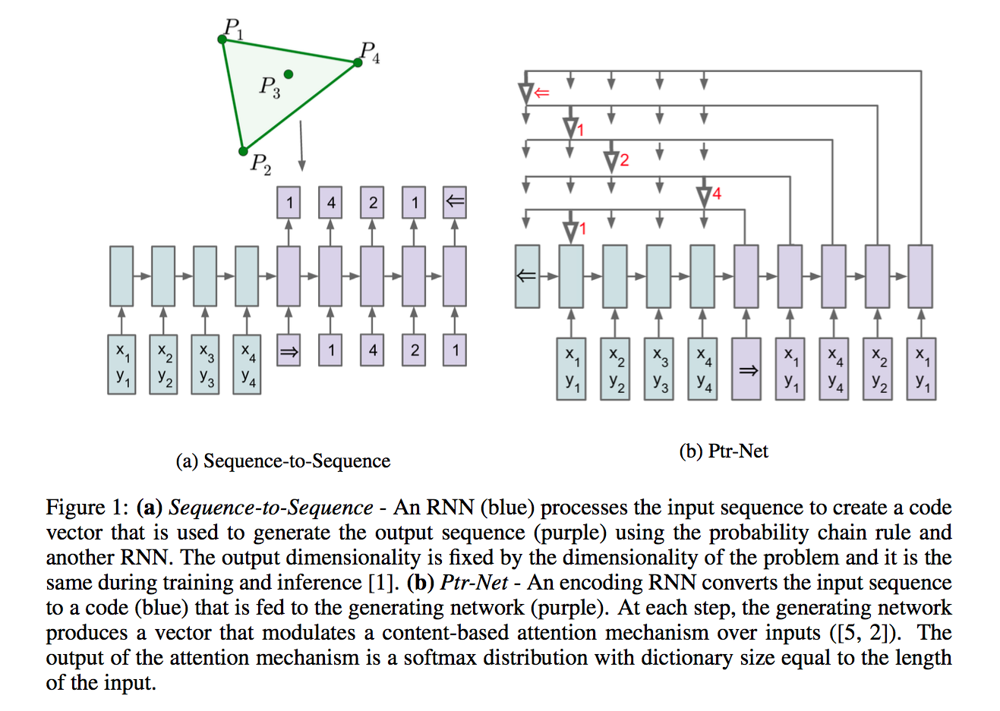

Pointer Networks
Updated:
This post introduces the Pointer Networks [1]. This new neural architecture tries to learn the conditional probability of an output sequence with elements that are discrete tokens corresponding to positions in an input sequence.
Applications
Pointer Networks work on the condition that the number of target classes in each step of the output depends on the length of the input.
Architecture
Pointer Net in [1] is based on Seq2Seq model and uses attention mechanism [2] in a different way.
Attention Mechanism
Let us briefly review how content-based input attention works. Suppose lengths of the input and the output are n and m respectly, and $e_{j}$ and $d_{i}$ are the encoder state at time step j and decoder hidden state at time step i. Then at output time i, the attention mask at j-th encoder state $a^{i}_{j}$ is calculated as
$$
u_{j}^{i} = v^{T} \tanh(W_{1}e_{j} + W_{2}d_{i}) \quad j \in (1,…,n)
$$
$$
a_{j}^{i}=softmax(u_{j}^{i}) \quad j \in (1,…,n)
$$
Then weighted encoder hidden state and decoder hidden state are contatenated and used as the new decoder hidden state.
$$
d_{i}^{‘} = \sum_{j=1}^{n} a_{j}^{i}e_{j} \
$$
$$
d_{i}^{new} = [d_{i}^{‘},d_{i} ]
$$
Pointer Net
Pointer Net seems to just change the meaning of attention mechanism. It is like “Well, now $a^{i}_{j}$ is the probability rather than the attention weight”. So, the equations exactly the same as above except the name:
$$
u_{j}^{i} = v^{T} \tanh(W_{1}e_{j} + W_{2}d_{i}) \quad j \in (1,…,n)
$$
$$
P(w_{i}|w_{1},w_{2},…,w_{i-1},\theta)=softmax(u_{i})
$$
where the probability means which element of the input sequence should be picked as the output at time step i given all previous output.
Figure 1 below demonstrates the differences between Seq2Seq and Pointer Net. As we can see, the main difference lies on the possible outcomes of Seq2Seq are all values in dataset while Pointer Net’s are all values from current input.

Figure 1 is from [1].
References
[1] Oriol Vinyals et al. Pointer Networks, 2015
[2] Dzmitry Bahdanau et al. Neural Machine Translation by Jointly Learning to Align and Translate, 2014